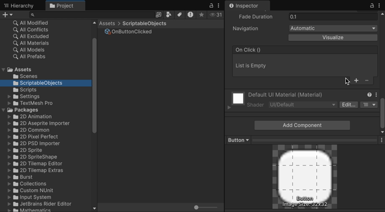

クイックスタート¶
SOAR の ScriptableObject インスタンスの作成¶
SOAR のインスタンスは、Create コンテキストメニューまたはメニューバーの Assets/Create から作成できます。
Project ウィンドウを右クリックし、作成するインスタンスを選択します。
GameEvent インスタンスの作成¶
GameEvent インスタンスを作成するには、Create/SOAR/Game Events/ メニューからいずれかのイベントタイプを選択します。

UnityEvents から GameEvent を発行する¶
Unity UI のボタンからイベントを発行するには、作成した GameEvent インスタンスをボタンの OnClick イベントに割り当てます。 ボタンがクリックされるたびにイベントが発行され、すべてのサブスクライバーに通知されます。

UnityEventBinder の使用法¶
Unity Event Binder は、GameEvent によって発行されたイベントを UnityEvent に転送するカスタム実装の Unity コンポーネントです。
これは、Scriptable Object Architecture の用語では EventListener としても知られています。
使用するには、任意の GameObject にコンポーネントを追加し、GameEventToListen フィールドに GameEvent インスタンスを割り当てます。

イベントが発行されると、割り当てられた UnityEvent が呼び出されます。

スクリプトから GameEvent を発行する¶
スクリプトからイベントを発行するには、GameEvent インスタンスの Raise() メソッドを使用します。
イベントが発行されると、すべてのサブスクライバーに通知されます。
using Soar.Events;
using UnityEngine;
public class GameEventPublisherExample : MonoBehaviour
{
[SerializeField] private GameEvent gameEvent;
private void Update()
{
if (Input.GetKeyDown(KeyCode.Space))
{
gameEvent.Raise();
Debug.Log($"Game Event {gameEvent.name} Raised.");
}
}
}
スクリプトから GameEvent をサブスクライブする¶
スクリプトからイベントをサブスクライブするには、GameEvent インスタンスの Subscribe() メソッドを使用します。
サブスクライブすると、イベントが発行されたときに提供されたコールバックが呼び出されます。
using System;
using Soar.Events;
using UnityEngine;
public class GameEventSubscriberExample : MonoBehaviour
{
[SerializeField] private GameEvent gameEvent;
private IDisposable subscription;
private void Start()
{
subscription = gameEvent.Subscribe(OnGameEventRaised);
}
private void OnGameEventRaised()
{
Debug.Log($"Game Event {gameEvent.name} Received.");
}
private void OnDestroy()
{
subscription?.Dispose();
}
}